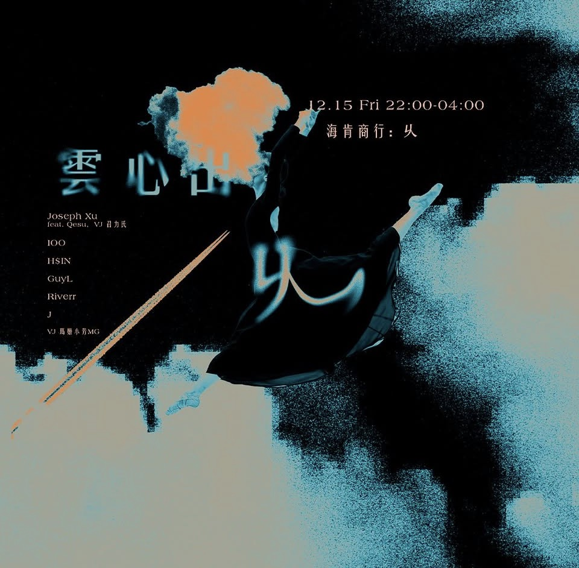
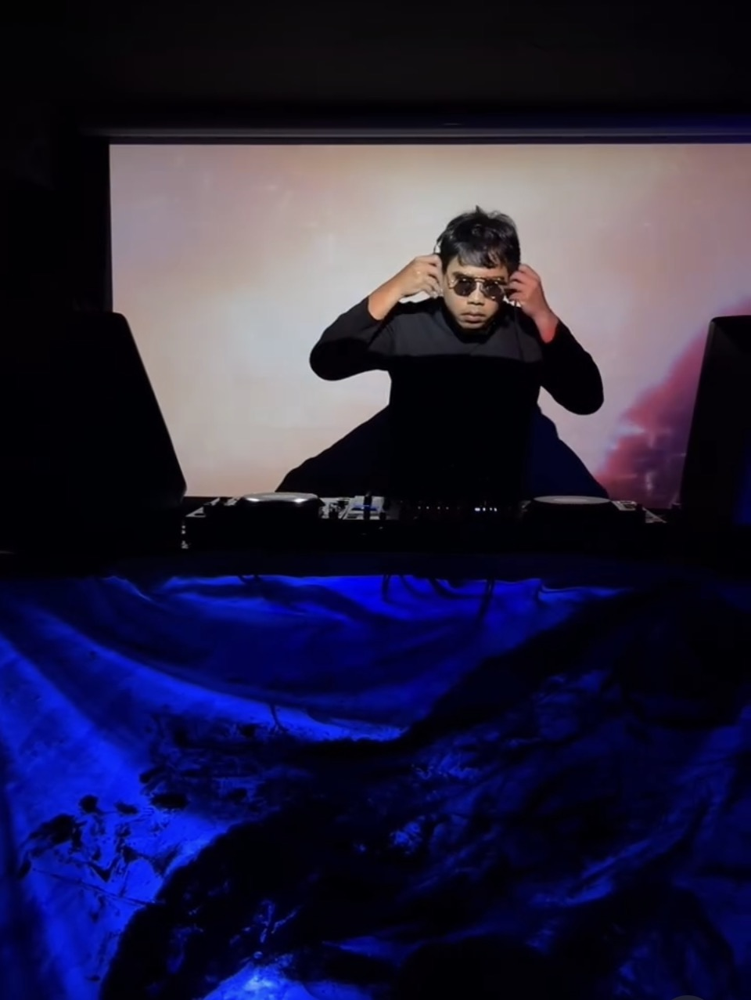
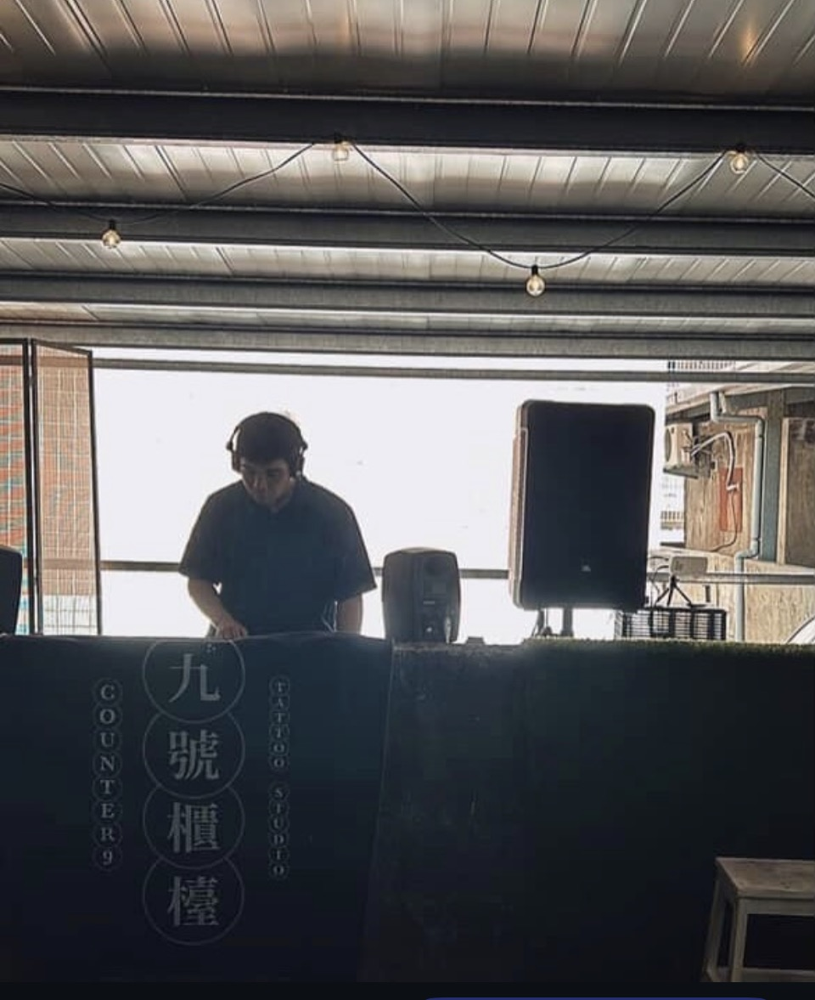
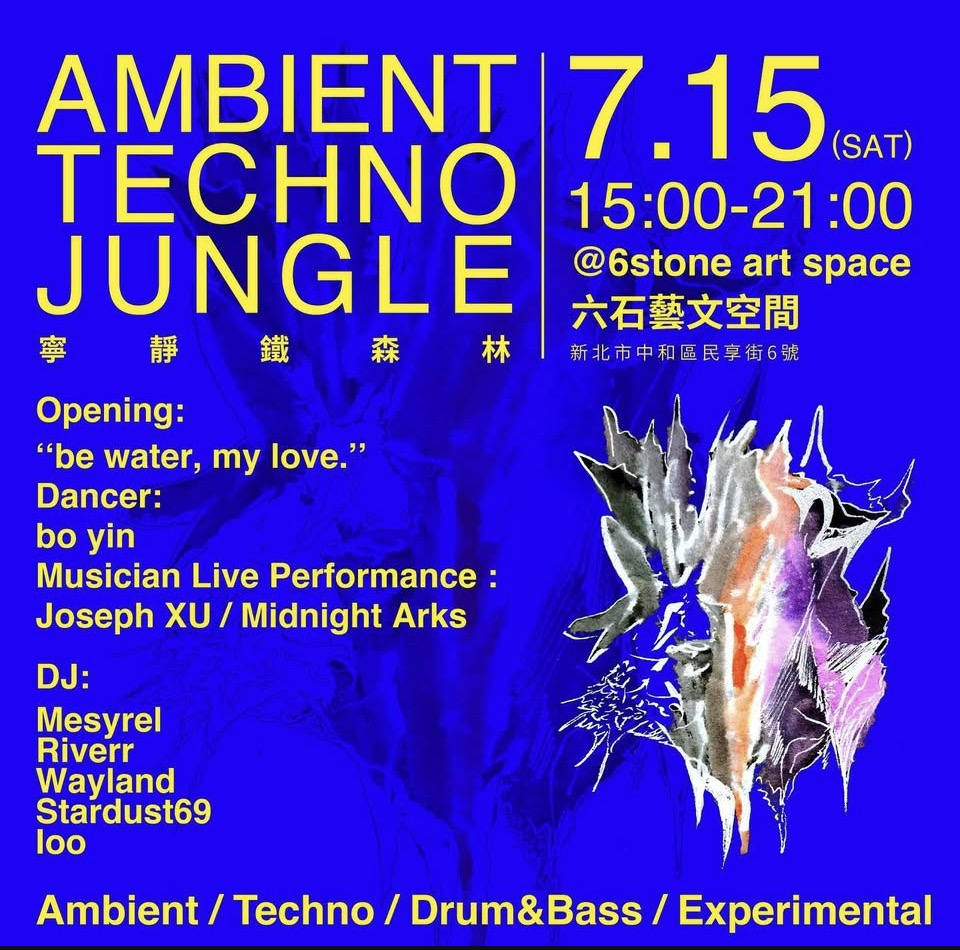
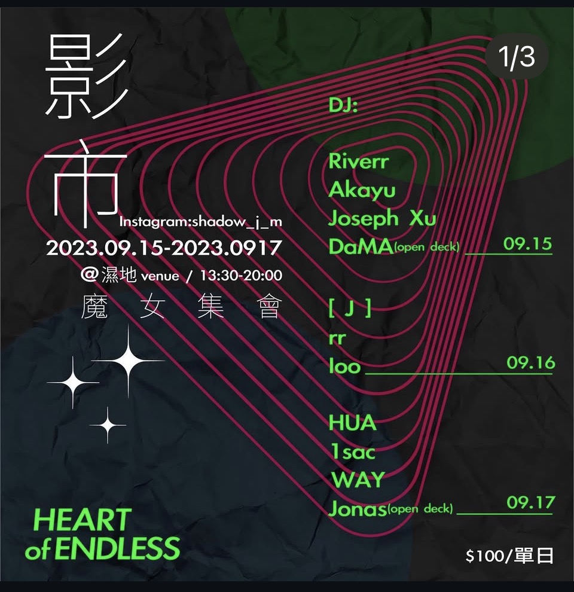

聲音
SoundDJ · 百 / loo
2023年開始放歌。與恩師 Wayland（已故）一起辦活動，後創立 Heart of U，結合新媒體藝術家探索電音與身體、空間、意識的邊界。
Playing since 2023. Began with the late DJ Wayland — teacher and collaborator. Founded Heart of U, a collective bringing together new media artists to explore the edges of electronic music, body, and space.
Ambient
Techno
Drum & Bass
Fourth World
Experimental
Film Score
Heart of U
結合新媒體藝術家、舞者、視覺藝術家，探索電音活動的可能性。嘗試不同聲響的邊界，在音樂、身體與空間之間尋找共振。
A collective of new media artists, dancers, and visual creators — exploring the possibilities of electronic music events, finding resonance between sound, body, and space.
活動紀錄










dj ＩＯＯ